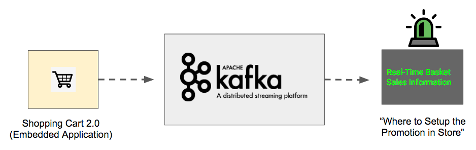

Building the Next-Generation Retail Experience with Apache Kafka and Computer Vision
Part 1 of 4
Authors: Josh Patterson, Stuart Eudaly, Austin Harris
Date: October 23, 2019
In this series of blog articles, we take on the perspective of the enterprise development team of a fictional Fortune 500 Retailer "Big Cloud Dealz" looking to integrate emerging technology to re-invent the in-store customer experience.
Retail stores are under more pressure than ever to "be like Amazon.com" in terms of tailoring the shopping experience for customers. This is especially true with Amazon's acquisition of Whole Foods and their original concept "AmazonGo." On the online front, we see shoppers expecting a customized shopping experience with recommendations based on their past viewing habits. We also see Amazon innovating with a storefront that mimics the online experience with a dizzying array of sensors and cameras. This series of blog posts gives a real world example in how a non-Amazon retailer could add some of these features to their retail experience by leveraging Apache Kafka (specifically Confluent's enterprise platform) and advanced object detection in computer vision. The shopping experience arms race has begun and there is no turning back now.
The venerable brick-and-mortar retailer "Big Cloud Dealz" badly wants to compete with the evolving shopping landscape and has made the concerted effort to integrate emerging technologies into their customer experience. Founding CEO, "Big Cloud Ron" (@BigCloudRon), loves technology but has been burned in the past by fancy tech ideas. Big Cloud Ron has mandated that IT approach this project in a way that is iterative and adaptable as they figure out "what works" and "what does not."
So, with the stage being set, we take a look at the notes from the first meeting where the enterprise team kicks off their project:
A Commerical for the K-Mart Blue Light Special
- Big Cloud Ron wants to increase engagement with his customers in a unique, personalized, and timely way that drives upsell. He wants to combine real people with technology -- something online retail cannot do.
- He wants customers to interact with a salesperson "at the right time in the right context." Big Cloud Ron, being a student of retail history, wants a modern version of the classic K-Mart Blue Light Special.1
- He wants the team to create the following effect in store with technology: create a dynamic in-store special that will prompt a sales associate to move to a specific aisle to upsell a specific product based on some business logic based on what people are shopping for "at that moment."
- He wants to offer a dynamic special that will have the chance to create the most extra margin possible. So, it will be necessary to know the summary of what items are in everyone's basket combined before they hit the registers.
Since we now know what management wants, let's take a look at the system architecture necessary to accomplish it.
Application Architectural Overview
Now that IT knows the business goal, here are a few key points they need to focus on to implement this system:
- Latency is a big deal for this application. If they don't have the aggregate contents of all the shopping baskets in a timely fashion, they can't make a business decision on which items to offer the upsell on in real-time. This makes their biggest focus to be on the streaming aspect of this application. The team has been reading a lot about how much success other companies have had with Apache Kafka, so they want to give that a shot.
- Kafka will handle the data ingest and aggregation part, but they still need a way to see the contents of all shoppers' shopping baskets while they shop. The team knows that object detection has gotten a lot better recently, so they want to leverage that to index the baskets' contents. They'll also need some sort of device attached to the shopping cart that can run this detection algorithm and send the output to the Kafka system.
- They don't really want to process this data in batch because latency is a killer for this situation. The longer they wait, the more likely the shopper is either in line for checkout or out of the store.
- They're going to leverage Confluent's packaging of Apache Kafka as their streaming data collection and processing system.
Digging into the Apache Kafka Platform
- The type of application they were looking for wasn't as good of a fit for the batch world due to the latency requirements.
- Streaming apps tended to differ from MapReduce (or Spark, batch, etc.) applications as they tended to implement core function of the business as opposed to computing analytics.
- Real-time apps work better as event-driven, while database-based applications are fundamentally table driven.
- Having stream processing mechanics built into the ingest platform is handy and more efficient than trying to cobble this together from multiple systems.
- Given that the team had to build an embedded application for Shopping Cart 2.0, being able to build everything else on a single platform was a benefit.
A quote from Confluent's site goes on to state:
The team also likes the idea of Kafka (as opposed to trying to put something together themselves) because they don't have to maintain another custom, internally-built system. Why? When building complex systems there are only so many parts you want to "own" as many things become a rabbit hole that distract from your end goal and most folks don't have time to miss their project dates."Consider a simple model of a retail store. The core streams in retail are sales of products, orders placed for new products, and shipments of products that arrive. The “inventory on hand” is a table computed off the sale and shipment streams which add and subtract from our stock of products on hand. Two key stream processing operations for a retail outlet are re-ordering products when the stock starts to run low, and adjusting prices as supply and demand change."
Jay Kreps' Blog Article: "Introducing Kafka Streams: Stream Processing Made Simple"
The General Application Architecture
Based on several whiteboarding sessions, the team comes up with a general design for what they want to do with the "Green-Light Special" application. In the diagram below, we see the architectural overview for this streaming Kafka-based application.
The team has broken up the applicaiton into 3 major components in the architectural diagram above:- A shopping cart (2.0) with an attached camera and wifi unit (likely an ARM-based embedded system) with an object detection model loaded to detect specific objects from the camera.
- A Kafka cluster back in the data center to collect all of the incoming data from the shopping carts, organizing it into logical topics for processing.
- A group of streaming applications leveraging Kafka's Streaming API to give the retail store's team a real-time look at what items are in customers' baskets across the store.
I DONT NEED COMPUTER VISION BECAUSE I CAN SEE THE FUTURE. AND IN THE FUTURE I BRING THE BLUE LIGHT SPECIAL BACK TO RETAIL. AND IT WILL BRING THE WOOOOO BACK TO RETAIL.
— BigCloudRon (@BigCloudRon1) August 8, 2018
Summary and Next Steps
In this blog post, we saw a new business plan developed by Big Cloud Dealz to update their in-store retail experience. In the next post in this series we'll look at the object detection portion of that system along with sending those detected objects to Kafka.